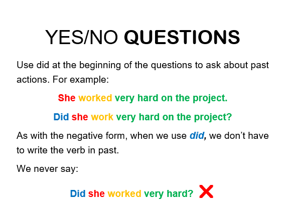
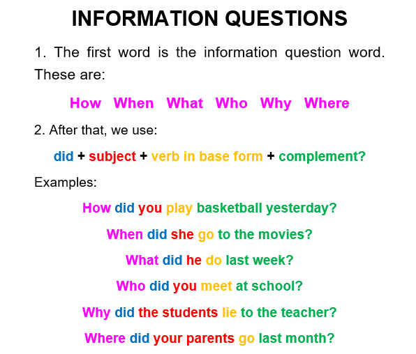

How to form questions with simple past?
To form Interrogative sentences in simple past you also need the help of the auxiliary verb did.
Structure: (Wh- word) Did + subject + infinitive verb + rest of the sentence + question mark
There are two types of questions: yes/ no questions and information questions, here you can see how they can be formed.
Remember that when you use the auxliary verb did you do not need to modify the main verb.

If the question starts with DID, you can give a short answer using DID. It is not necessary to use the main verb in the answer.
Examples
Did you sleep well last night?
Yes, I did / No, I didn't.
Did the airplane arrive on time?
Yes, it did / No, it didn't.
